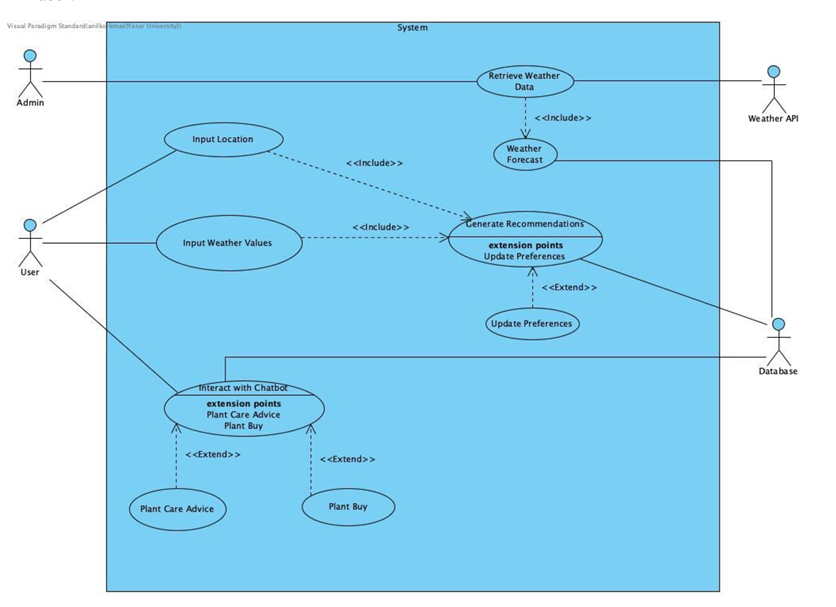
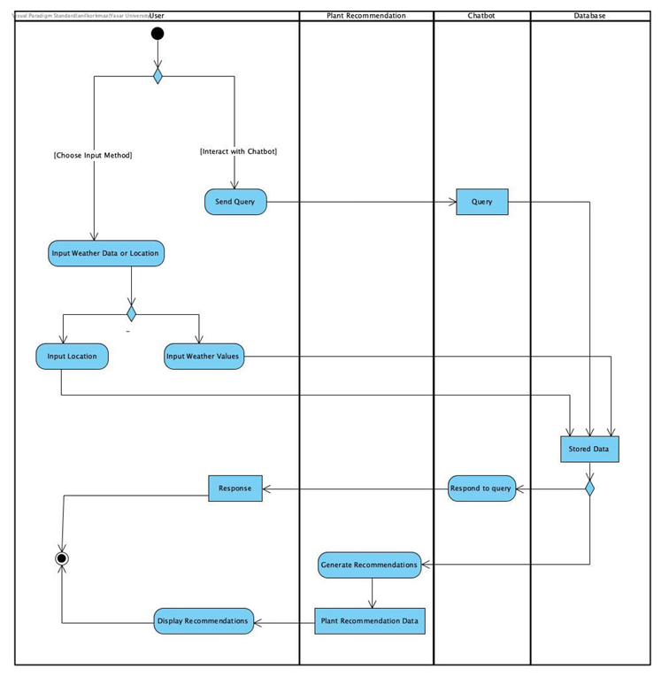
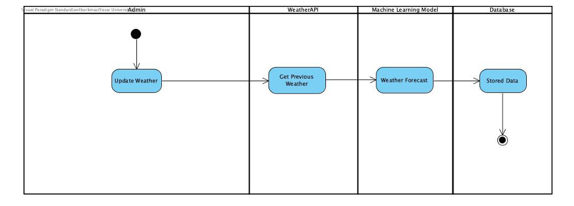

location: The geographical area of the user, used to fetch
localized weather.
weatherMinValue: The minimum temperature in the user's location.
weatherMaxValue: The maximum temperature in the user's location.
chatbotQuery: A string representing what the user last asked the
chatbot.
Methods:
inputLocation(): Allows the user to enter their location.
inputWeather(): The user can input their own weather data.
interactWithChatbot(): Engages with the chatbot for care tips or
purchase recommendations.
Chatbot
Attributes:
chatbotID: Identifier for the chatbot.
plantListStemmed: List of the plant names after stemming.
svmModel: ML model that finds intent and plant_name in the given
sentence.
Methods:
provideCareTips(plantID: int): string: Returns care advice based on
the plant ID.
suggestPurchases(plantID: int): string: Presents users with
reliable purchasing suggestions.
PlantRecommendation
Attributes:
plantID: Identifier of the plant.
plantName: The name of the plant.
plantWeatherMinValue: Minimum temperature the plant can tolerate.
plantWeatherMaxValue: Maximum temperature suitable for the plant.
plantGrowthTime: Time it takes for the plant to reach maturity.
Methods:
generateRecommendations(): Creates plant suggestions based on
environmental data.
Database
Attributes:
username: Credential for accessing the database.
password: Credential for accessing the database.
Methods:
storeData(data: string): void: Saves data into the database.
retrieveData(criteria: string): string: Retrieves data based on
specific criteria.
Admin
Methods:
updateWeatherData(): Admin uses this to update weather data.
WeatherAPI
Attributes:
apiEndPoint: Endpoint to reach the weather service.
apiKey: Security key to access the API.
Methods:
fetchWeatherData(location: string): Retrieves weather data based on
a given location.
MachineLearningModel
Attributes:
modelID: Identifier for the ML model.
trainingData: The dataset used to train this model in the art of
prediction.
Methods:
predict(weatherData: string): string: Returns weather forecast
based on weather inputs.
Use Case Diagram

Actors
User: Represents home gardeners or farmers who interact with the system to
input data and receive recommendations.
Admin: Represents admins that update future weather values in the database.
Weather API: Provides external weather and climate data to the system.
Database: Stores and retrieves information, including future weather data,
plant recommendations, purchasing suggestions, and plant care tips.
Use Cases
Input Location: User provides their location to fetch weather data
automatically.
Input Weather Values: As an alternative to automatic location input, the user
manually provides weather data like highest and lowest temperature.
Retrieve Weather Data: System fetches data from the Weather API based on user
location.
Weather Forecast: Predicts future weather values by using retrieved weather
data and linear regression machine learning model. Updates weather forecasts in the database.
Generate Recommendations: The system processes the weather data and user
preferences to suggest suitable plants or crops.
Interact with Chatbot: The user interacts with the chatbot for plant care
advice and purchasing suggestions.
Update Preferences: The user sorts generated results by name and time interval.
Display Recommendations: The system shows a tailored list of plants or crops to
the user.
User Activity Diagram

Workflow Explanation
User Interaction:
The user starts the process by selecting between two options:
Input weather data or location.
Interact with the chatbot.
Input Weather Data or Location:
If the user chooses to input data, a decision node directs them to:
Input Location: The user provides their geographical location.
Input Weather Values: The user manually enters minimum and maximum
weather values.
Chatbot Interaction:
If the user opts to interact with the chatbot:
The user sends a query.
The chatbot processes this query and requests relevant information from the database.
The database processes the request and returns relevant data.
The chatbot responds to the user with the retrieved information.
Recommendation Generation:
Once sufficient data is available, the system proceeds to generate plant recommendations.
The plant recommendation module sends a query to the database based on the input data.
The generated recommendation data is passed to the user as a response.
Display Recommendations:
The user receives and views the plant recommendations.
The activity ends after displaying the results.
Admin Activity Diagram

Workflow Explanation
Admin Interaction:
The admin initiates the process by selecting the action to update weather.
This action triggers a sequence of tasks to retrieve and predict weather values.
Weather Data Retrieval:
The system calls the WeatherAPI to get previous weather data based on the admin's
request.
Weather Prediction:
The retrieved weather data is passed to the Machine Learning Model.
The model processes this data to forecast future weather values.
Store Forecasted Data:
The forecasted weather data is then passed to the Database.
The database stores the predicted weather values for future use (e.g., for plant recommendation
systems).
End of Process:
Once the data is stored, the activity concludes.